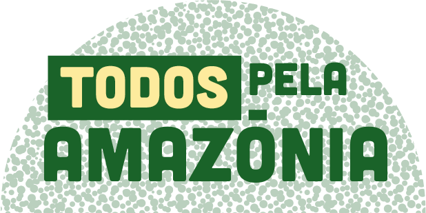

Salve a Amazônia
Ajude o Greenpeace a proteger o meio ambiente!.
Metas:
- Conservação de florestas: O Greenpeace trabalha para proteger as florestas tropicais e outras áreas florestais vitais para a biodiversidade e o equilíbrio climático. Isso inclui o estabelecimento e o apoio a áreas protegidas, bem como a promoção de práticas de manejo sustentável..
